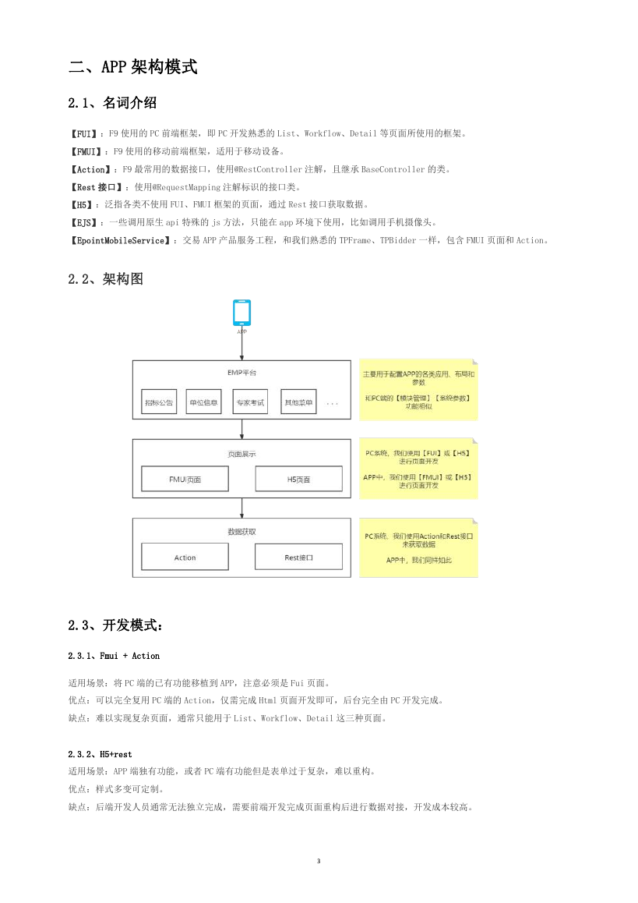
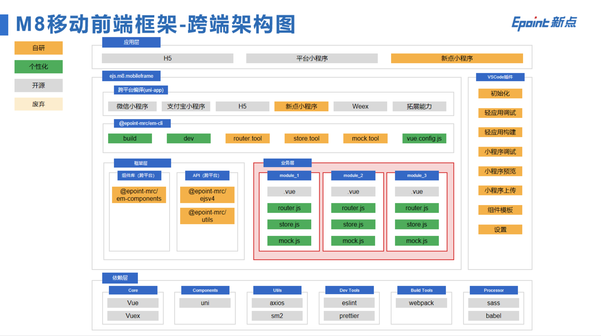

概览
onJsPrompt
后端地址ywtb-test.gzggzy.cn/emp831_cs/rest/mobile/（测试环境）
⭐ 先看这张：H5、EJS、EMP8 是什么关系
一句话：EMP8 是整套平台（手机上的 App 壳 + 服务器上的移动管理后台），EJS 是 App 壳里专门用来跑 H5 的容器和接口层，H5 是交易业务页面，跑在 EJS 里面。三者是一层套一层的关系，不是并列的三样东西。
⭐ 8.0+ 部署全景：一个交易 APP 由哪些应用组成
来源：电子交易APP基础学习资料/ 下的《电子交易移动APP部署说明文档 - 8.0版本 - V2.0》《EMP应用相关配置说明》《移动APP项目对接及常见问题.pdf》。已和 APK 交叉核对：applogin、rest/frameztbv8、portal_role_relation、ejs-authorize-domains、message-rest-url、face_rest_url、ejs_bidopening-business-rest-url 在 APK 里都能找到。
版本对照（重点看 8.0 以上）
| 业务系统版本 | 框架版本 | 基座版本 | 说明 |
|---|---|---|---|
| 7.1.12.2 / 7.1.30.x | 9.1.18 / 9.3.x | M7、M8 | 可落地部署，也可接入标证通专区 |
| ≥ 7.1.40.3 | ≥ 9.4.2-sp1 | M8 | 开标大厅首页整合、标证通首页整合从这个版本起支持 |
| 8.0 | 9.5 | M8 | 移动端合并到 PC：不再单独部署 EpointMobileService，只部署 EMP8 + Ejs（H5）；移动端的接口和审批页和 PC 一样以 jar 包的形式放在 tpframe / tpbidder 的 lib 里，个性化也按 PC 的方式做 |
⚠ 「M8」有两个意思，别混淆：M8 基座指 App 壳和 EMP8 的版本；M8 移动前端跨端框架指写 H5 的 Vue 框架。标准版 H5 工程名还叫 ejs.m7.bidding.v3，新开发的页面用 M8 跨端框架（M8.3 / M8.4）。
三种建设模式
| 模式 | 是什么 | 流程 |
|---|---|---|
| 落地型 | 给项目单独做一个 APP、公众号或小程序（最常见） | 部署应用 → 申请开发者账号 → 原生打包 → 业务开发 → 独立发布（iOS 必须上架；2023-09 起需要 APP 备案） |
| 专区模式 | 功能集成到标证通的专区里，没有独立 App | 部署应用 → 开通标证通专区 → 业务开发 → 专区上线（SSO 用多 token 模式） |
| 接入第三方 | 接入皖事通、浙里办等，通常提供 H5 | 部署 → 拿对方的接口和设计规范 → 开发 → 三方上架 |
两种页面开发模式：FMUI + Action vs H5 + Rest

| FMUI + Action | H5 + Rest | |
|---|---|---|
| 前端 | FMUI（F9 移动前端框架，PC 端 FUI 的移动版） | H5（标准版 ejs.m7.bidding.v3 / 新开发用 M8 跨端框架） |
| 后端 | 直接复用 PC 的 Action（@RestController + BaseController） | Rest 接口（@RequestMapping），遵循 V7 规范 |
| 适合 | 把 PC 已有的 List / Workflow / Detail 页搬到 App，待办审批页基本都用这种 | App 独有功能，或 PC 表单太复杂没法直接搬 |
| 优点 | 只写 HTML，后台完全复用 PC | 样式灵活 |
| 缺点 | 复杂页面很难做 | 要前端重构页面再联调，成本高 |
审批页（FMUI）怎么做
- 用在线转换工具把 PC 页面代码转成 FMUI：
http://218.4.136.118:8022/epoint-translate/pagetranslate/pageinfo/translatepageinfo，粘贴 PC 代码后点「转换」 - 调整 js、核对字段，保证数据和 PC 一致；PC 上的个性化控件需要删减或个性化实现
- 审批操作用标准页：
wf_approve_opinion（提交）、wf_approve_back（退回）、wf_approve_opinionpass/pre（带选人）、wf_approve_qy*（企业版）、wf_opinion_template（意见模板） - 前端资源：把
frame/fmui和workflow/放进 tpframe / tpbidder（7.x 放进 EpointMobileService） - 工作流配置：打开工作流（如「项目注册审核流程」），在对应活动的「应用程序配置」里选移动端 APP，地址填审批页，例如
…/jsgcztbmis2/pages/projectreg/Project_Detail（一步审核不用配） - 批量转换：手工转好一页后，让 AI 参考它总结规则，再批量转换
EMP8 后台配置清单（文档版，补全之前「待确认」的部分）
配置中心 - EMP 参数
| 参数 | 值 / 作用 |
|---|---|
sso_url | http://ip:port/EpointMobileService（SSO 地址） |
sso_client_id / secret | SOA / SSO 里注册的应用 |
faceurl | 人脸识别服务（内网） |
expandUser / expandUserType | 开启外部用户扩展后自动生成 |
账号授权
- 外部用户扩展：开启后填
rest/frameztbv8/getuserinfotoemp、getuserroletoemp，权限类别全选。这样交易系统的用户和角色就能直接用于 EMP8 的权限控制 - 角色管理：中心、交易甲方（11）、交易乙方（13）、代理机构（18）、专家
配置中心 - APP 参数（会下发到 App 和 H5）
| 参数 | 作用 |
|---|---|
ejs_h5-pageurl | H5 代码地址，如 …/ejs.m7.bidding.v3/pages/ |
ejs_business-rest-url / business-rest-url | 业务接口 …/rest/frameztbv8/ |
message-rest-url、message-channel-id | 消息中心 |
portal_role_relation | 门户名 → danweitype，如 {"交易乙方":"13","代理机构":"18","交易甲方":"11"}。门户改名后这里也要同步改 |
bidlogin_show_flag | 1111：依次控制手机号 / 扫脸 / 扫码绑定 / 标证通 四种登录方式的显示 |
ejs-authorize-domains | EJS 全局安全域名 |
service_privacy_url | 隐私协议地址（带版本号） |
ejs_bidopening-* | 开标大厅的 rest、图片、mqtt-url、用户名、密码（开标大厅方提供） |
oauth-mobile-authorize | token（9.3.4 用 cookie + oauth-rest-url） |
菜单三件套（就是之前说的「后台配菜单」）
应用中心 - 应用管理 新建应用：名称 / 图标 / 类型（H5 | 原生 | 小程序）/ 地址 / 权限 → APK: ApplicationBean(h5url|android|minih5)
应用中心 - 卡片管理 首页卡片：类型「自定义卡片」+ 地址，例如 …/pages/center/homepage/homepage_withoutmeeting.html
首页管理 首页（几个门户、什么权限）/ Tab / 门户（中心工作人员、交易甲方、交易乙方、代理机构、专家）
→ APK: system/tablist、system/getportal、system/getcardbyprotalguidEMP8 服务端还要配：SSO 客户端配置 EpointSSOClient.properties；转调配置 epointframe.properties 的 empfit_fit_url、empfit_business_api_prefix=rest/frameztbv8/、empfit_custom_api；「系统设置 - 移动运营管理平台配置」里的服务 URL；≥9.4.2sp2 的版本，外网访问时要配 EMP8.properties 的 emp.ServerUrl。
标准功能模块 & 个性化要点
核心原则：App 的数据要和 PC 一致。大部分个性化工作就是对照 PC 端的 SQL、筛选条件、按钮，同步调整。PC 端功能先完善并测试通过，移动端才能开始做。
| 端 | 模块 | 标准版 H5 路径（ejs.m7.bidding.v3） | 个性化要点 |
|---|---|---|---|
| 中心 | 工作台 | pages/center/workbench/workbench_index、_detail | 对照 PC 改列表 SQL 和筛选条件；节点和 PC 不一致时，检查 PC 的 ztb.properties 里有没有 WorkbenchPackages，App 同步配置 |
| 待办事宜 | pages/center/todo/todo_index | 一般配上标准页就行；审批页走 FMUI（见上一节） | |
| 招标文件 | pages/center/biddoc/… | 对照 PC 调 SQL、排序、字段；预览需要 officeweb | |
| 交易信息 / 政策法规 / 通知公告 | pages/center/deal/deal_index、policy/policy_list | 在 ztb.properties 的 WEBDB_CATEGROY 里配网站栏目号；网站改了栏目号，公告就会空白 | |
| 今日开标 | pages/center/today/today_index | 数据和 PC 一致；标准版没有搜索 | |
| 代理库 / 投标人库 | pages/center/hylib/agentlib_*、bidderlib_* | 参考 PC 主体管理增减字段 | |
| 邮件 / 日程 / 通讯录 | OA 模块 | 需要部署 oarest9 并接入移动端 SSO；即时通讯用织语或融云（收费） | |
| 会员（投标人） | 我要投标 | — | 后台本质是一个 datagrid：对齐 PC 的 SQL 和查询条件，以及按钮（下载、报名）的渲染 |
| 我的项目 / 已中标 | 同一个后台，用 url 参数区分 | 项目环节在 bdinfo.json（新版 bdinfo_new.json）里配，参考 PC 配置节点和实现类 | |
| 交易信息 | pages/bidding/dealinfo | 改栏目号和默认栏目，调通接口 | |
| 登录 | — | 扫码绑定（适用于插锁登录、没有 loginid 的用户）、标证通跳转登录、扫脸（虹软 SDK 和标证通冲突，不建议做）、短信（收费） | |
| 专家 | 在线考试 / 练习、评委请假、视频学习 | ||
接口规范 V7（新写 Rest 接口必须遵守）
请求 { "params": { "userguid": "…", "token": "匿名接口才需要传" } } ← 参数名一律小写
响应 { "status": { "code": 1, "text": "失败时的描述" }, "custom": { … } } ← code=1 表示成功
token 生成 / 校验：TokenUtils.createToken("emp8userext") / TokenUtils.validateToken(token)
接口文档要写：名称、地址、请求示例、参数说明、返回示例、注意事项（给三方用的文档需要经过产品评审）跨域：本地开发用 nginx 把页面和接口代理到同一个域名；或者服务端在 web.xml 里打开 CORSFilter（cors-filter-2.5），放在第一个 filter。接口需要 token 时，supportedHeaders 里要加 Authorization；用 M8 的染色请求时，还要允许 User-Token、MobileFrame-Info。
查漏补缺：之前漏了什么，现在补上了什么
| 之前（只看 APK + M8 文档） | 补上后 |
|---|---|
| 只知道有「EMP8 后台」 | 完整的服务端拓扑：EMP8（转调网关）+ SSO / SOA + tpframe / tpbidder（8.0）或 EpointMobileService（7.x）+ H5 资源 + 开标大厅、OA、officeweb |
| 以为页面全是 H5 | 还有 FMUI + Action 模式：待办审批页由 PC 页面转换而来，复用 PC 的 Action，并在工作流活动里配置移动端地址 |
| 菜单配置的界面「待确认」 | 应用中心（应用 / 卡片）、首页管理（首页 / Tab / 门户）、角色、外部用户扩展、APP 参数，都已明确 |
| 不知道 H5 地址和接口地址从哪来 | 来自 APP 参数 ejs_h5-pageurl / ejs_business-rest-url，由 EMP8 下发 |
| 不知道接口规范 | V7：params 进，status + custom 出；用 TokenUtils 生成和校验 token；处理跨域 |
| 不知道版本差异 | 8.0 / 9.5 合并到 PC；业务 ≥ 7.1.40.3、框架 ≥ 9.4.2-sp1 用 M8 基座；「M8」有两个意思 |
| 只关注写代码 | 项目对接流程：立项 → 资源和账号 → PC 先完善 → UIUE → 接口 → H5 → 上线（应用商店 / 备案 / 隐私协议） |
| — | 门户和角色体系（中心 / 甲方 / 乙方 / 代理 / 专家）、portal_role_relation、消息订阅勾选 APP |
| — | 微信小程序：需要 https 备案域名，EpointMBXcx.properties（APPID、SECRET），appletmodule.json 按角色配置常用应用 |
仍然缺的（需要向团队要）
H5 调用自定义 EJS 模块的写法→ 已解决：ejs.callApi({mudule,name,data})（来自 ejsv4 源码）- 标准版 H5 工程
ejs.m7.bidding.v3和 EMP8 部署包的源码：在内网 git192.168.0.200/dzjy/apps/byt/… 8.0 版移动端接口放在哪→ 已明确：和 PC 一样，以 jar 包的形式放在 tpframe / tpbidder 的 lib 里，个性化方式也和 PC 一样- 文档里的截图（docx 内嵌图片）这次没有提取
App 壳是什么？为什么不全部写原生？
壳就是这个 APK 里用 Java 写的原生部分，本身就运行在 Android 系统上。之所以叫“壳”，是因为它自己几乎不含交易业务，主要负责把 H5 业务页面装进来运行。H5 是网页，不能直接跑在 Android 系统上，需要浏览器内核，壳里的 WebView 就充当这个内置浏览器。
Android 系统 ─运行→ APK（壳：原生能力 + WebView/EJS） ─装载→ H5（交易业务）为什么不全部用原生开发
| 对比 | 全原生 | 壳 + H5 |
|---|---|---|
| 改一个页面 | 重新打包、用户重装 | H5 发布到服务器，用户无感更新 |
| 多平台 | Android/iOS/鸿蒙 各写一遍 | H5 写一份，各平台各做一个壳 |
| 加菜单 | 改代码、发版 | EMP8 后台配置 |
| 体验 | 最好 | 稍差，但业务页面够用 |
为什么不用手机浏览器直接打开 H5
- CA 证书签名、解密：要调用手机盾 SDK
- 开标实时消息：MQTT 要在后台常驻连接
- 推送、扫码、直播、录音
- 统一登录：token 由壳统一管理，所有 H5 共享
这些能力只有原生代码能调用，所以由壳通过 EJS 接口开放给 H5，例如 mobileShieldNewApi.signData、bjmejsapi.startMqttService。
H5 是怎么写的：M8 移动前端跨端框架（来自官方离线文档）
H5 不是随便写的网页，而是用新点的 M8 移动前端跨端框架（Vue + uni-app）开发。一套代码可以构建成 H5、H5-EJS（在 App 里跑）、钉钉、微信小程序、支付宝小程序、新点小程序。框架核心以 npm 包形式提供：@epoint-mrc/em-components（UI 组件）、@epoint-mrc/ejsv4（EJS JSSDK，就是 H5 端的 ejs.xxx）、@epoint-mrc/utils（Util.ajax 等工具）。
文档来源：~/workspace/knowledge/knowledge-main/技术笔记/010-M8移动框架离线文档/（m8mpdoc 框架文档 + ejs4mpdoc 的 148 个 EJS API）

工程结构（ejs.m8.mobileframe）
src/
├─ pages/
│ └─ <模块名>/ ← 一个业务模块一个文件夹
│ ├─ list.vue 页面（Vue 单文件）
│ ├─ detail.vue
│ ├─ router.js 页面清单（构建时合并进 pages.json）
│ ├─ store.js 状态（可选）
│ └─ mock.js 模拟数据（可选）
├─ components/custom_components/ 业务组件
├─ shared/config.js 全局配置：serverUrl / env / ajax / token
├─ shared/boot.js 公共资源
├─ static/ 静态资源（不编译）
├─ manifest.json · pages.json命令
# 环境：Node 22（M8.4）或 16（M8.3），建议用 nvm、pnpm
# VSCode 以管理员身份安装，并装 EPOINT TOOLS 插件
# npm install 需在公司内网（私有 npm 仓库）
npm install
npm run dev:h5 # 本地调试，浏览器 F12
npm run dev -- --moduleName=xxx # 直接打开指定模块
npm run build # 产物在 dist/build/h5
# 新点小程序（会对应菜单里的 minih5 入口）
npm run build -- --moduleType=mp-epoint \
--moduleName=xxx --buildType=build|debug|upload框架获取：GitLab epoint-mrc-fe/ejs.mp.mobileframe/ejs.m8.mobileframe 的 releases，或 SVN epointjframerelease/mobileframedev/tags/M8移动前端跨端框架（都在内网）。
最小可用代码（照官方「列表详情」案例改写）
// src/pages/zbgg/router.js 路由只写 path 和 style，不用 import
export default [
{ path: 'pages/zbgg/list', style: { navigationBarTitleText: '招标公告' } },
{ path: 'pages/zbgg/detail', style: { navigationBarTitleText: '公告详情' } },
];
<!-- src/pages/zbgg/list.vue -->
<template>
<view class="container">
<!-- em- 开头的组件按 easycom 自动引入，不用 import -->
<em-minirefresh :url="url" :page-size="10" :init-page-index="0"
:request-data="dataRequest" :change-data="dataChange">
<template v-slot:default="{ listData }">
<em-cell v-for="(item,i) in listData" :key="i" :title="item.title" @click="open(item)"/>
</template>
</em-minirefresh>
</view>
</template>
<script>
export default {
data() { return { url: `${Config.serverUrl}/rest/zbgg/list` }; },
methods: {
dataRequest(page, size) { // 请求参数统一包在 params 里
return { params: JSON.stringify({ currentpageindex: page, pagesize: size }) };
},
dataChange(res) { // 新点标准返回：status.code === 1，数据在 custom 里
return res && res.status && res.status.code === 1 ? res.custom.infolist : [];
},
open(item) { // 跳转页面用 ejs.page，不要用 vue-router
ejs.page.open({ pageUrl: './detail', data: { guid: item.guid } });
}
}
};
</script>
// 调用原生能力：EJS JSSDK 统一用 success/error 回调
ejs.auth.getToken({ success(r) { /* r.access_token */ }, error(e) {} });
// 用 Util.ajax 请求时会自动带上 token（Config.ajax.isAutoProxy，请求头 User-Token），一般不用手动取ejs.page.open 的参数名请对照 ejs4mpdoc/pages/api_page/api_page.md。案例原文见 m8mpdoc/003-典型案例/003-列表详情.md。
文档和 APK 源码互相印证（说明两边理解一致）
| 官方文档（H5 端） | APK 反编译（原生端） |
|---|---|
ejs.auth.refreshToken({isForce, isAutoLogout}) | SSO 插件 c/e/r/b/c.java 读取 isforce、isautologout |
| EJS 模块 audio/auth/device/event/io/navigator/page/runtime/storage/stream/ui/util… | com/epoint/ejs/api/*Api.java 逐个对应 |
| 能力矩阵里的 Auth（需授权）列 | JSApiEnable + public_exposed_api 白名单 |
Config.configReady → ejs.config({ jsApiList })：key 是模块名，value 是原生类的包名 | JSBridgeAuth.register(name, Class) 动态注册自定义 API |
Config.env = 'native_uni'：在 App 里加载 ejs.native 版 JSSDK | WebView onJsPrompt 拦截 EpointJSBridge:// |
构建 --moduleType=mp-epoint（新点小程序） | 菜单项 minih5 入口 → EPH5 小程序 |
⭐ 交易开发步骤图
完整步骤清单（新人照着做）
| # | 做什么 | 具体操作 | 依据 |
|---|---|---|---|
| 前置 | 项目条件 | PC 端功能先完善并测试通过；确认业务版本（≥7.1.40.3，或 8.0）和建设模式（落地 / 专区 / 三方）；部署好 EMP8、SSO 等应用并开通外网 | 对接及常见问题.pdf |
| 0 | 准备环境（只需一次） | Node（M8.4 用 22.x，M8.3 用 16）+ nvm、pnpm，VSCode 以管理员身份安装并装 EPOINT TOOLS，连公司内网 | m8mpdoc/0001-前期准备 |
| 1 | 拿框架、建模块 | 从 GitLab / SVN 拿 ejs.m8.mobileframe → npm install → 新建 src/pages/<模块>/router.js 和 .vue。先确认是 M8.3 还是 M8.4 | 002-框架获取、004-开始开发 |
| 2 | 写页面、联调 | 在 config.js 里设置 serverUrl 和 env='native_uni'；用 Util.ajax 调接口；用 ejs.* 调原生能力；先用 mock，再 npm run dev:h5 联调 | 007-Config、003-典型案例、ejs4mpdoc |
| 3 | 构建、部署 | npm run build → 把 dist/build/h5 交给交付人员上传服务器，得到 URL；如果做成新点小程序，用 --moduleType=mp-epoint | 010-构建、011-发布 |
| 4 | EMP8 后台配菜单 | 应用中心 - 应用管理：新建应用（类型 H5，地址填页面 URL，设置权限）→ 卡片管理 / 首页管理：挂到首页卡片、Tab、门户 → 给角色授权；新接口如果走 rest/frameztbv8/，确认 EMP8 的转调配置 | EMP应用相关配置说明；APK c/e/a/w/f.java |
| 5 | App 验证 | 重新登录 → 点菜单 → 检查页面、token、原生能力；用 Config.isDebugPanel 在手机上看日志 | 007-Config |
| 分支 | 待办审批页 | 不写 H5：用转换工具把 PC 页面转成 FMUI → 复用 PC Action → 放进 tpframe / tpbidder → 在工作流活动的「应用程序配置」里选 APP 并填地址 | 审批页开发指南、对接 PDF 第 7 章 |
| 分支 | 缺原生能力 | 写 IBridgeImpl → 注册（registerApi，或 H5 端用 ejs.config({jsApiList}) 动态注册）→ 白名单 → App 重新发版 | APK：TBEJSApi、JSBridgeAuth |
整体架构（源码分层）
图中的实线表示调用方向，虚线表示原生把结果回传给 H5。① 和 ② 是混合开发的核心；③ 让各模块可以独立开发、按需装配。
核心机制一：JSBridge（H5 调用原生）
调用协议
EpointJSBridge://模块名:端口号/方法名?{json参数}
例：EpointJSBridge://tbejsapi:1001/getToken?{"loginId":"xxx"} // 端口号 = 回调 ID写一个 API（模板：com/epoint/app/plugin/TBEJSApi.java）
public class TBEJSApi implements IBridgeImpl {
public static String RegisterName = "tbejsapi"; // H5 里用的模块名
public ArrayList<String> provideMethodNames() { // 对外开放的方法白名单
return list("getToken", "login", "getCollections", ...);
}
public void callMethod(String m, b c, EJSWebView wv, JSONObject p, Callback cb) {
switch (m) { case "login": login(c, wv, p, cb); break; ... }
}
static void login(b c, EJSWebView wv, JSONObject p, Callback cb) {
PageRouter.getsInstance().build("/activity/loginaccount").navigation(wv.getContext());
cb.applySuccess();
}
}
// 注册：com/epoint/workarea/AppApplication.java:148
JSBridge.registerApi(TBEJSApi.RegisterName, new TBEJSApi());项目里自定义的 API
| 模块名 | 主要方法 |
|---|---|
tbejsapi | getToken · login · getCollections · saveCollections · delCollection · isCollection · startWXPay |
bjmejsapi | startMqttService · stopMqttService · startMQEJSWebLoader · playWithURL · showPlayer · hidePlayer · switchToVideoWithRowguid · joinFspMeeting · openMobileshield · ZtbAppSwitchPortal · gohome |
mobileShieldNewApi | applyEnterpriseCert · applyUserCert · genUserCSR · saveCert · signData · signDataP7 · pubKeyEncrypt · priKeyDecrypt · getCertList … |
| JJ / BYT | getToken · start/stopMqttService ｜ getDeviceInfo · cleanCache · switchUserType · switchUserIdentity |
为什么用 prompt：addJavascriptInterface 在 Android 4.2 以下有反射漏洞；prompt 能同步返回值，也方便统一鉴权（ejs_auth_enable，本包为 0，即关闭）和打调用日志（recordJsApiCalled）。
⭐ EJS 全链路：JS 源码（ejsv4）↔ 原生源码（APK）完整对上了
EJS 的功能都是在 App（原生）层实现的。@epoint-mrc/ejsv4（源码在 dfx待分析/epoint-mrc-next-packages-ejsv4/packages/ejsv4，版本 4.2.23）只是一层很薄的 JS 桥：把 ejs.ui.alert(...) 这样的调用拼成 URL 发给 App，App 里对应的 UIApi.java 才真正干活。所以，壳里没实现的能力，H5 再怎么写也调不到，新能力必须改 App 并发版。
H5 ejs.callApi({ mudule:'bjmejsapi', name:'startMqttService', data:{…}, success, error })
│ ejsv4 src/core/callnativeapi.ts → inner/triggerjsbridge.ts（生成回调 id，短期 / 长期）
│ ejsv4 src/core/nativejsbridge.ts getUri():
│ EpointJSBridge://bjmejsapi:<回调id>/startMqttService?<encodeURIComponent(JSON)>
│ Android: window.prompt(uri) （超过 5000 字符：拆块用 storage.setLongCache 传，再发 veryLongString）
│ iOS: webkit.messageHandlers.WKWebViewJavascriptBridge.postMessage(uri)
│ iframe 里：自动带上 callbackFunc / callbackIframeUUid
▼
App WebChromeClient.onJsPrompt (c/e/i/l/e/g.java) → JSBridgeAuth.callJava → parseUrl → canIUse → IBridgeImpl.callMethod
│ BJMEJSApi.startMqttService(...) 真正干活
▼
App Callback.apply → evaluateJavascript("JSBridge._handleMessageFromNative({responseId, responseData})")
▼
H5 _handleMessageFromNative 按 responseId 找回调：responseData.code==0 → error(res)；否则 success(res.result)
长期回调（isLongCb:1）不删除，可以反复触发（下拉刷新、右上角按钮、MQTT 消息）H5 调项目自定义模块：两种方式
| 原生端怎么注册 | H5 怎么调 | 例子 |
|---|---|---|
App 启动时静态注册：JSBridge.registerApi("bjmejsapi", new BJMEJSApi())（AppApplication.l()） | 直接调用：ejs.callApi({ mudule:'bjmejsapi', name:'xxx', data, success, error }) | 本项目的 tbejsapi、bjmejsapi、mobileShieldNewApi 都属于这种 |
H5 动态注册：先在 ejs.config({ jsApiList:[{ pay: ejs.os.ios ? 'EJSPayApi' : 'com.epoint.ejs.api.PayApi' }] }) 里声明，原生 EventApi.config 读到 jsApiList 后执行 jsBridgeAuth.register(key, Class.forName(value)) | 在 ejs.ready() 之后用 ejs.callApi({ mudule:'pay', … }) 调用 | 组件类 API；value 是原生类全名，Android 和 iOS 不同 |
⚠ 参数名是 mudule（源码里就是这样拼的，不是 module）。可选参数：isLongCb:1 长期回调，appVersion:'x.y.z' 校验容器最低版本。标准 API（ejs.ui.xxx 等）不要用 callApi 去调，因为标准 API 还带有兼容处理。非 EJS 环境（浏览器、小程序）下，要先用 ejs.extendModule 注册同名 API 才能调用。示例：showcase/showcase/ejsv4/ejs_api_v4_callapi.html。
核心机制二 / 三：插件服务总线 + PageRouter + MVP
插件加载（PluginApplication）
- 读取
arrays.xml的plugin_provider（12 个插件） - 用
Class.forName加载；ejs立即初始化，其余插件稍后统一onCreate() - 插件注册服务：
c.e.m.e.a.b().d("sso","provider",impl) - 调用方按字符串调用：
"sso.provider.serverOperation"+{method:...} - 平台服务注入：
c.e.l.c.a.a(ICommonInfoProvider.class)
路由 + MVP
- 声明路由：
@Route(path="/activity/loginpassword") - 编译期生成
PageRouter_Root_*/Group_*路由表（50+ 个） - 跳转：
PageRouter.getsInstance().build(path).navigation(ctx) - 分层：View(Activity) → Presenter → Model → provider / Retrofit
- 定制：注册新路由覆盖（如
/activity/mainActivity/new），或替换 PresenterPool 里的 Presenter
典型业务链路
① 账号密码登录
LoginPasswordActivity (@Route /activity/loginpassword)
└ LoginPasswordPresenter.startLogin(pwd)
└ Model c.e.a.r.p.n() {loginid, password, encrypttype, method:"getToken"}
└ 服务总线 "sso.provider.serverOperation"
└ SSO 插件 c.e.r.b.c.invoke() getToken / refreshToken / cancelToken
└ Retrofit POST mobileappclient/mobilelogin (x-www-form-urlencoded)
← 成功：getTabListAndRequestUserInfo() → "contact.provider.serverOperation" getuserinfo → 进入主页
← 失败：code 1001 走特殊分支，其他情况提示错误② 不见面开标：MQTT + 直播
H5 → bjmejsapi.startMqttService({biaoduanguid, userguid, uri, username, pwd, projectguid})
└ bjm/service/MqttService 订阅 [标段guid_用户guid, projectguid, 标段guid]
└ 收到消息 → EventBus("LiveControl" | "11111111")
└ BJMMqEjsWebLoader.onReceiveMsg() (主线程)
├ webView.loadUrl("javascript:onReceiveMsg('msg','topic')") → 推给 H5
└ LiveControl → 控制腾讯 LiteAV 播放器
H5 → bjmejsapi.playWithURL / showPlayer / joinFspMeeting(好视通)③ CA 签名（手机盾）
H5 → mobileShieldNewApi.applyUserCert / genUserCSR / saveCert / signDataP7 / priKeyDecrypt → ccit mkeysdk。投标文件签名和开标解密都走这条路径。
新人做交易 APP 开发：怎么上手
第一步：判断需求属于哪一类
| 需求 | 做法 |
|---|---|
| 普通业务页面（公告列表、投标表单、项目详情） | 写 H5，通过 EJS 调用原生能力，原生代码不用动 |
| H5 需要一个新的原生能力 | 新增 / 扩展 IBridgeImpl → 注册 → 加入白名单 |
| 必须原生实现的页面（登录、主框架、直播、扫码） | Activity + @Route + MVP |
| 跨模块调用（token、用户信息） | provider 总线 / ICommonInfoProvider，不要直接 import |
| 实时业务（开标、竞价、解密进度） | MQTT Service → EventBus → 推给 H5（参考 BJM） |
| CA / 签章 / 加解密 | 复用 mobileShieldNewApi / 标证通，不要自己写 |
任务 A：给 H5 加一个原生能力
- 新建
XxxEJSApi implements IBridgeImpl，定义RegisterName - 在
provideMethodNames()里列出方法，在callMethod()里用 switch 分发 - 耗时操作放子线程，完成后调用
applySuccess/applyFail（内部会切回主线程） - 在
AppApplication.l()里JSBridge.registerApi(...) - 开启鉴权时，需要在
public_exposed_api/ 后台放开这个方法 - H5 端：
ejs.callApi({ mudule:'xxxejsapi', name:'method', data:{…}, success, error })。静态注册的模块直接调用；动态注册的模块要先在ejs.config({ jsApiList })里声明，在 ready 之后再调用（见「EJS 全链路」一节）
任务 B：新增一个原生页面
- Activity 继承
FrmBaseActivity（Callback 只认这类 Context） - 加
@Route(path="/activity/xxx") - 写
IXxx契约接口 + Presenter + Model - Model 通过 provider 总线 / Retrofit 请求
platform_url - 在 Manifest 注册；跳转统一用 PageRouter
踩坑清单（源码里读出来的）
- Bridge URL 不能带
#；port 不能为空；核心版本 ≥ 7.3.0 - Activity finish 之后回调会被丢弃，WebView 是弱引用持有
- 多次回调用
JSBridgeParamForCallback://参数传 - iframe 调用要带
callbackFunc/callbackIframeUUid - MQTT Service 的 start / stop 要配对，否则会重复订阅、耗电
- provider 的 method 名改了，编译期不会报错，要全局搜索调用方
platform_url现在是测试环境，发版前要确认
调试方法
- H5：Chrome
chrome://inspect（debug 包需开启 WebView 调试） - 日志：
adb logcat，过滤epoint/[epoint-mqtt] - 切换环境：
ChangeEnvActivity - 卡片 / 小程序：
Epth5CardDebugActivity - 对照源码：
~/devtools/jadx/bin/jadx-gui
学习路线（建议按顺序）
- JSBridge：H5 → prompt → callJava → IBridgeImpl → Callback → H5
- 插件和总线：PluginApplication、plugin_provider、"xx.provider.yy"
- 登录链路：LoginPasswordPresenter → c.e.a.r.p → SSO 插件 → Retrofit
- 实时业务：BJMEJSApi.startMqttService → MqttService → BJMMqEjsWebLoader
- 定制套路：app/project/*、Jy*、BYT*（继承 + 覆盖路由 / Presenter 工厂）
- H5 端以 M8 离线文档为准（
~/workspace/knowledge/.../010-M8移动框架离线文档），配合 skillm8-mobile-cross-platform；EMP8 后台操作再向团队要文档
关键文件索引 ~/workspace/cs0822-src/sources/
| 文件 | 作用 |
|---|---|
com/epoint/ejs/jsbridge/JSBridge.java | API 注册表、URL 解析、方法分发 |
com/epoint/ejs/jsbridge/JSBridgeAuth.java | callJava 主流程、鉴权、调用日志 |
com/epoint/ejs/jsbridge/Callback.java | 原生 → H5 回传结果 |
com/epoint/ejs/jsbridge/JSApiEnable.java | API 白名单 / 可用性判断 |
c/e/i/l/e/g.java | WebChromeClient.onJsPrompt 拦截入口 |
com/epoint/plugin/application/PluginApplication.java | 插件加载 |
com/epoint/workarea/AppApplication.java | 项目 Application：注册 API、初始化路由 |
com/epoint/app/plugin/TBEJSApi.java | 自定义 API 模板 |
com/epoint/app/project/plugin/BJMEJSApi.java | 不见面开标 API |
com/epoint/app/bjm/service/MqttService.java | 开标 MQTT 服务 |
com/epoint/app/bjm/view/BJMMqEjsWebLoader.java | MQTT 消息推给 H5、直播控制 |
com/epoint/app/presenter/LoginPasswordPresenter.java | 密码登录 |
c/e/r/b/c.java · c/e/r/d/a.java | SSO provider · Retrofit 登录接口 |
resources/res/values/arrays.xml | plugin_provider · public_exposed_api |
resources/res/values/strings.xml | platform_url · ejs_* 配置 |